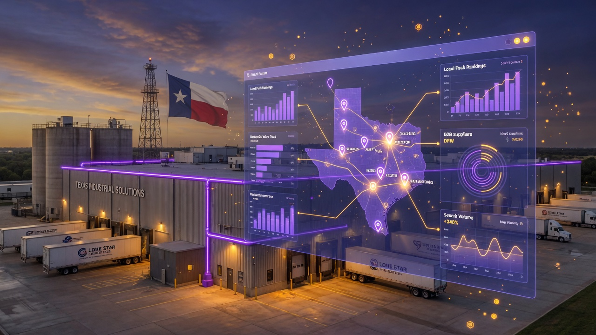
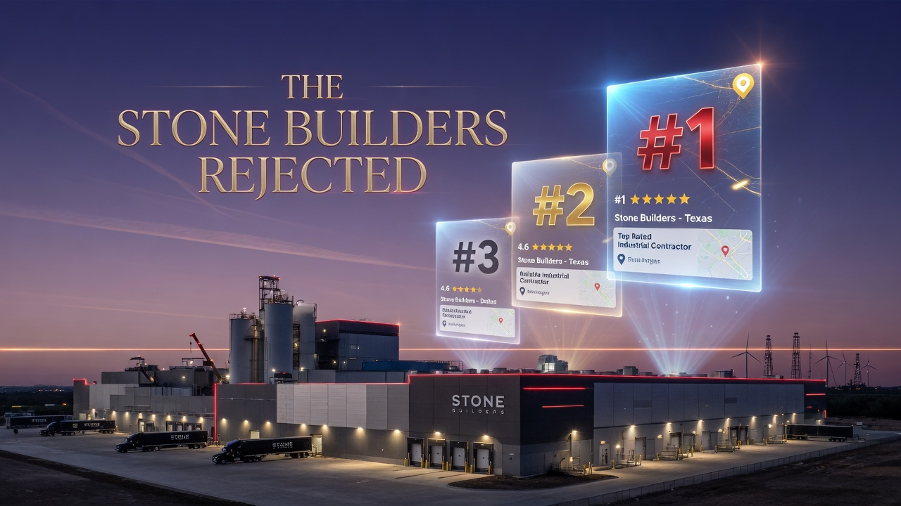
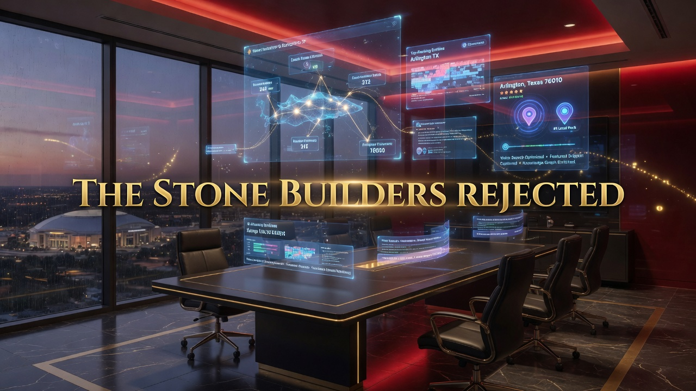
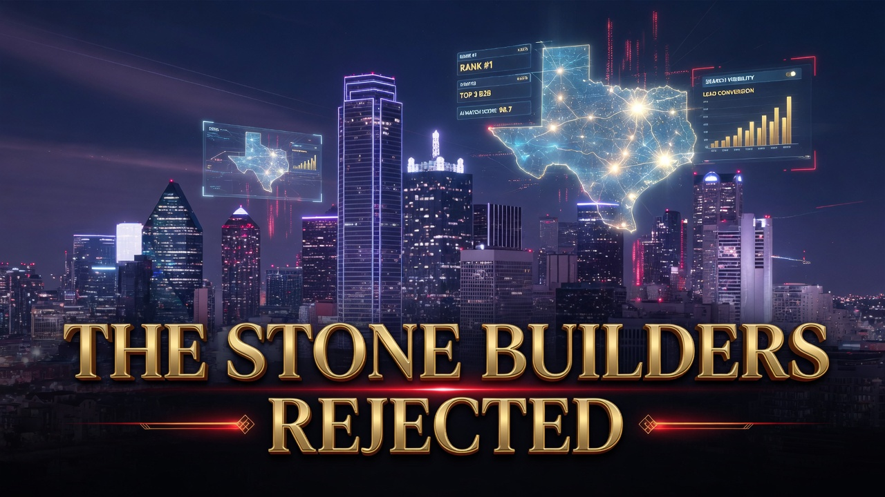

★★★★★
We went from page 9 to owning 17 Map Pack positions in 74 days. Our sales team is now overwhelmed with high-quality commercial leads.
Texas B2B leaders trust TSBR Enterprises for measurable Map Pack dominance, AI Overview citations, and qualified commercial lead growth.
TSBR client reviews document verified Texas B2B outcomes: Map Pack dominance in 74 days, 4.3x lead volume increases, AI Overview citations, and five-star Google reviews from industrial, contracting, and professional services firms across DFW, Houston, and Austin.
See how we’ve transformed local search visibility for industrial, contracting, and professional services firms across Texas — turning overlooked companies into Map Pack cornerstones with documented lead growth.
Real feedback from Texas B2B clients who partnered with The Stone Builders Rejected.
Large-format testimonials from industrial, contracting, and professional services firms across the Lone Star State.
We went from page 9 to owning 17 Map Pack positions in 74 days. Our sales team is now overwhelmed with high-quality commercial leads.
The GMB work plus AI optimization put us in conversations we were never part of before. We are now the default recommendation in greater Houston.
TSBR understood our civil engineering practice better than any agency we interviewed. Austin metro visibility changed our bid pipeline within one quarter.
Map pack dominance in San Antonio translated directly into quote requests. We saw 3.2x more RFQs from manufacturers who found us on Google first.
Mike personally audited our five DFW locations and found suppression issues our last agency missed for two years. Within 60 days every branch hit the top 3.
We are a B2B logistics firm, not a consumer brand. TSBR optimized for the searches freight managers actually use. Qualified inbound calls doubled.
The free audit alone was more actionable than a paid strategy we bought elsewhere. We signed on immediately and have not looked back.
AI Overview citations were a black box until TSBR mapped our entity gaps. Now we appear when procurement teams ask ChatGPT and Google for Texas vendors.
North DFW is brutally competitive for commercial contractors. TSBR got us into the Map Pack in Plano and Frisco while our website organic rankings climbed in parallel.
Founder & Principal Strategist · Arlington, Texas
Michael K. Kaswatuka founded The Stone Builders Rejected in Arlington, Texas with a single conviction: the best B2B companies are often the most overlooked online. For more than a decade he has engineered local search dominance for Texas commercial and industrial businesses — turning invisible profiles into cornerstone Map Pack positions, AI Overview citations, and measurable lead pipelines.
Mike works directly with every client. No handoffs to junior account managers. He personally audits Google Business Profiles, maps competitor landscapes, and designs the GMB Velocity System that has moved hundreds of Texas companies from page nine to top-three local rankings across DFW, Houston, Austin, San Antonio, and statewide multi-location operations.
His approach blends forensic SEO, strategic media placement, entity authority engineering, and conversion-focused profile optimization. Clients trust Mike because he reports on qualified commercial leads and pipeline impact — not vanity traffic — and because he treats every engagement as building a cornerstone, not checking boxes.
Four integrated services engineered for Texas B2B companies ready to own Maps, organic search, and AI Overviews.
Google Business Profile is the front door for Texas B2B revenue. When a plant manager in Irving searches industrial equipment repair near me or a Houston facilities director looks for commercial HVAC ...
Explore service →Texas procurement teams increasingly ask AI before they ask Google. When someone queries Which commercial contractor serves Houston energy corridor projects? or Best industrial supplier in San Antonio...
Explore service →Local SEO for Texas B2B requires more than a handful of directory listings. Buyers search with metro-specific intent: commercial electrician Plano, civil engineering firm Round Rock, industrial distri...
Explore service →B2B lead generation through search is not about traffic volume. It is about qualified commercial inquiries from buyers ready to request quotes, schedule site visits, or issue RFQs. Texas industrial an...
Explore service →We do not chase restaurants, salons, or national e-commerce brands. Every process, case study, and keyword framework is built for Texas commercial buyers with h...
Google Business Profile is the highest-ROI asset for most Texas B2B companies because buyers start on Maps. We treat GMB as an engineering project, not a checkl...
Generative search is already shaping B2B vendor discovery. We build entity authority, structured answer content, and corroborating citations so AI models recomm...
You work with Mike Kaswatuka, not a rotating account coordinator. Mike has led Texas local search strategy since 2012 and personally audits competitive landscap...
Arlington is home base for The Stone Builders Rejected. From our office on Brynmawr Court we serve t...
Dallas anchors North Texas commerce. B2B companies compete for visibility from Uptown corporate head...
Fort Worth blends industrial heritage with rapid west DFW growth. Manufacturing, fabrication, logist...
Greater Houston is Texas largest B2B market. Energy corridor firms, commercial contractors, industri...
Austin combines tech-sector procurement with booming commercial construction and civil infrastructur...
San Antonio and South Texas industrial corridors rely on local discoverability for manufacturing sup...
TSBR Enterprises is a Texas-authority digital marketing and local search agency headquartered in Arlington. We specialize in Google Business Profile optimization, AI Overview engineering, and B2B lead systems for commercial and industrial companies statewide.
The name comes from Psalm 118:22 — the stone the builders rejected became the cornerstone. That is our mission: turn overlooked businesses into the most visible, trusted, and cited company in their market.
Founded by Mike Kaswatuka, TSBR combines forensic SEO audits, strategic media placement, weekly GMB velocity, and entity authority building into one measurable operating system.

Documented outcomes from Texas B2B engagements across industrial, contracting, and professional services.

Precision Machine Works in Irving had best-in-class CNC capabilities and a loyal referral base, but was invisible on Google. Their Google Bu...
View case study →
Gulf Coast Commercial Construction served greater Houston with strong project credentials but relied almost entirely on bid networks and wor...
View case study →
Lone Star Civil Engineering had deep expertise in Austin metro transportation and site development but lost discoverability to national firm...
View case study →Every engagement begins with a forensic audit of your Google Business Profile, citations, website local signals, competitor Map Pack positions, and AI Overview visibility. We document suppression risk...
Mike Kaswatuka builds a market-specific plan based on how your buyers search in each Texas metro you serve. We map commercial keyword intent, estimate competitive difficulty, align GMB categories and ...
We fix the structural layer first: profile completeness, photo and video deployment, service and product entries, citation cleanup, on-page location optimization, and schema markup. Texas B2B buyers t...
The GMB Velocity System goes live: weekly Google Posts, Q&A seeding, review acceleration workflows, and competitor monitoring. Content aligns with seasonal demand and regional terminology. DFW industr...
Local search is not set-and-forget. Competitors react, algorithms shift, and AI Overviews expand into new query types. Ongoing management strengthens your signals, expands into adjacent service areas,...
Every estimate includes a GMB health scan, Map Pack snapshot, competitor review, and 90-day action outline.
Prefer email? Reach out directly and we respond within 4 business hours.
Serving DFW, Houston, Austin, San Antonio, and statewide multi-location B2B operations.